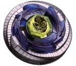

Duo Uranus 230WD
| Duo Uranus 230WD | |
|  | |
| Number: | BB-121 |
|---|---|
| System: | Metal Fight Beyblade |
| Type: | Stamina |
Contents
Note: Duo Uranus 230WD was released by TAKARA-TOMY and SonoKong alongside L Drago Guardian S130MB and Wing Pegasis 90WF, in BB-121, the Beyblade Ultimate DX Set.
Face: Uranus
The Face depicts a humanoid face, ostensibly that of Uranus, the Greek God of the Sky. The head sports a mask, which appears torn on the left side, revealing a skull underneath. The division of the face into two separate halves encourages the "duality" theme which permeates this Beyblade's aesthetics. There are six dots on the forehead of the figure, representing Uranus' first six sons and six daughters, the Titans.
4D Clear Wheel: Uranus
| Weight: | 2.4 grams | Full Width: | 3.70 mm | Full Height: | 4 mm | Minimum Height: | 2 mm |
The Uranus Clear Wheel, in a dark blue colour, accentuates the wind designs on the 4D Metal Wheel by illustrating shapes in movement coming from the centre of the Beyblade, as if it were in a right-spin motion. Uranus has two pentagonal shapes above and below its centre, and the stickers on it represent wings slightly shaped into faces, where one is more diabolical-looking with jagged feathers, and the other is more heroic-looking, with smoothly curved lines.
This Clear Wheel is notable for being the smallest Clear Wheel in Metal Fight Beyblade, being only 36mm in diameter at its widest points. It is also one of the lightest Clear Wheels, being only 0.2g heavier than Gemios, the lightest Clear Wheel. However, these features mean little in terms of competitive worth, and Uranus is generally not considered a competitive part.
4D Metal Wheel: Duo
| Weight: | 42.3 grams | Full Width: | 46 mm | Full Height: | 8.0 mm |
Duo is formed of series of spirals seemingly emitted from the centre, as if they were wind gushes, again linking back to the wind theme of the Beyblade as a whole. This 4D Metal Wheel is made up of two components: The upper half is the Metal Frame?which is the basis of the mode change?and the Core, which supports the Metal Frame, as well as denoting the mode and playing a small part therein.
Duo's gimmick relates to balance: in Stamina Mode, it is well balanced, and in Attack Mode, it is greatly off-balance. This mode change is done by rotating the Metal Frame 90 degrees clockwise, or 90 degrees counter-clockwise. Doing so, however, requires disassembly of the Beyblade.
Metal Frame
| Weight: | 20.7 grams | Full Width: | 4.6 mm | Full Height: | 4.5 mm | Minimum Height: | 3.5 mm | Underside Wall Height: | 1.9 mm | Underside Wall Width: | 1.5 mm |
Duo's Metal Frame has a completely circular perimeter, while its top side contains the main visual design of the Duo Wheel, the aforementioned spiral pattern. The most interesting aspect of the Metal Frame is how it makes the mode change work: on the underside, there is a wall only on one part, which either protrudes over one side of the Core, focusing the weight on that side of the Metal Wheel, or fits in perfectly to the side 90 degrees counter-clockwise of this, balancing out a slightly lighter section of the core, resulting in a very well-balanced Metal Wheel.
Core
| Weight: | 21.6 grams | Full Width: | 45 mm | Full Height: | 4.5 mm | Minimum Height: | 1.8 mm | S Edge Width: | 3 mm | A Edge Width: | 2 mm |
The Core is the heavier part of the Duo 4D Metal Wheel. It has eight separate sections, four raised, and four indented. The raised sections are identical, and these support the Metal Frame and have slightly jagged tops, intended to grind down opponents, though in battle, the small vertical gaps they leave do not have any noticeable effect.
- Attack Mode
The hollowed sections are more varied. The two which are parallel to the center support are identical in their indentations, aside from one side having an engraved "A". When the walled section of the Metal Frame is placed here, it results in the imbalance which causes the aggressive and unstable movement seen in Attack Mode.
- Stamina Mode
The parts on either side of the center support are not identical: one side, the one lacking engraving, is more filled-in than any of the other indented sections, while the opposite side, marked with an S, is the most hollowed-out of the four. When the wall of the Metal Frame is placed here, it evens out the weight discrepancy between these two points, resulting in a well balanced wheel. This is Stamina Mode.
In Stamina Mode, Duo is almost perfectly circular, which, combined with the well-balanced, largely externalized weight distribution resulting from the orientation of the Metal Frame and Core, allows for excellent Stamina. While its weight distribution and solo spin times are not as good as Phantom?the most popular Stamina Metal Wheel?its lower Recoil means that it loses less Stamina when hit, and as a result, the Survival ability of these two Metal Wheels is almost perfectly even. They are so closely matched, in fact, that which of the two will win in a battle between otherwise identical combinations depends entirely around the weight of the two specific Duo and Phantom Metal Wheels, which is known to vary to a relatively large degree in 4D Beyblades.
The near-total absence of Recoil also makes Duo arguably the best Metal Wheel for Defense Customizations, despite being noticeably lighter than Basalt, furthering its overall use. This said, due to its reliance on low Recoil rather than high weight, the weight variations observed in 4D Beyblades can result in vastly different defensive ability: an unusually light Duo (Duo Metal Wheels as light as 41 grams have been recorded) is significantly easier to knock out than one of average weight. Furthermore, to have worthwhile Defense ability, Duo Customizations must focus on maintaining grip and/or minimizing Recoil: additional weight or stamina at the cost of these results in sub-par Defensive performance, meaning common setups such as TH170CS and BD145MB are usually not worthwhile. That said, Duo is still an extremely powerful Defense wheel, and should not be underestimated.
Duo's Attack Mode is far less notable: in Attack Mode, the Metal Frame sits slightly off centre, and the weight is further shifted to one side by the respective shapes of the Metal Frame and Core. While generally intended for use in Wobbling customization, the resulting off-centre balance has an effect similar to that of Storm Capricorne's M145 Track, producing aggressive movement from even the most passive tips: even Phantom Orion's Bearing Drive can take on an offensive movement pattern when used with this mode, if the combination is launched hard enough. While it is not a competitively useful gimmick, it is nonetheless entertaining.
Use in Stamina Customization
Duo, in Stamina Mode, can be put to good use in the top-tier Stamina custom: Duo Aquario TH170D.
Use in Defense Customization
Duo may also be used in the top-tier Defense custom: MF-H Duo Aquario BD145CS, again in Stamina Mode.
Use in Stamina/Wobbling Customization
A rather unique, but highly effective Duo combination is MF-H Duo Aquario/Cancer/Cygnus 230MB. Again, its Stamina Mode is used. This combination capitalizes on the stability provided by Duo and the Metal Face-Heavy, alongside the ability of Metal Ball to tilt to extreme angles without losing balance, to create a powerful Stamina customization which effectively neutralizes 230's weakness to being hit from below. Instead of being destabilized by such opponents, the combination hits them downward through wobbling, reducing their stamina by causing them to tilt harshly and topple earlier than they otherwise would. Furthermore, it still performs excellently against Beyblades of similarly tall stature, due to the stability provided by Duo and the grinding effect the wobbling has on the opponent. This combination has been shown to perform at least as well as more conventional Duo-based Stamina customizations, as well as being slightly harder to knock out although it is still highly susceptible to Attack types.
Track: 230
| Weight: | 4.1 grams | Maximum Width: | 23.0 mm | Minimum Width: | 17.0 mm | Full Height: | 23.0 mm |
230 is the tallest Track released thus far. 230 is part of the Maximum Series, and is labelled as the Maximum Height for Tracks. 230 has six indents near the top of the Track that sharpen downwards to about the half of the Track. 230 is rounder and thicker than regular Tracks with no gimmicks, in order to protect it structurally as it comes into regular contact with opposing Wheels. Its round and smooth shape results in significantly less recoil than if it were based on the traditional hexagonal Track shape. Since 230 is so tall, it can wobble at great lengths for extra Stamina, defeating various Stamina customizations with lower Tracks. From a defensive viewpoint, it uses its height as an advantage to protect itself from low incoming Attacks, by protecting the Metal Wheel from major contact while using the reinforced plastic to absorb most of the shock. As a result of this, 230 can defeat most low Attack customizations under the 120 height when paired with other top-tier Defense parts.
230 also has some notable weaknesses, however. As a Defense Track, 230 is extremely susceptible to tall Track Attack types in the opposite spin direction, such as MF Lightning L Drago BD145LRF and MF Gravity Perseus BD145RF. Additionally, TH170 at 220 height is successful against 230-based customizations, while also offering height-based versatility at the same time.
Use in Stamina Customization
230 can be put to use in the Stamina customization Duo Aquario 230D.
Bottom: Wide Defense
| Weight: | 0.7 gram | Full Width: | 15.53 mm | Tip Width: | 14.17 mm | Full Height: | 8.92 mm | Tip Height: | 6.75 mm | Tip Angle: | 40° |

Wide Defense, as its name implies is one of the widest of the ?Defense? series of Bottoms (D, SD, WD, PD, EWD). This brings numerous advantages, but also some disadvantages when compared to the other ?Defense? Bottoms, specifically D. The advantages include its ability for abnormally long precession times due to its massive width that reaches the edge of the Bottom's perimeter. This allows it to wobble at a significantly larger angle for a longer period of time than D, and at a much lower spin rate. However, depending on the position of the Beyblade using WD and the spin rate of the opponent, this can be disadvantageous because of how easy it becomes to knock over the precessing WD custom. This low spin rate towards the end of the battle is created because in the process of wobbling at such a large angle, more friction is made with the stadium floor, thus decreasing its Stamina. Nevertheless, this more often an advantage than it is a disadvantage.
Newer parts such as CS, EDS and B:D have overshadowed WD to some degree: CS and EDS due to their ability to be paired with the popular BD145 Track without scraping, and B:D because of its height and even longer precession times, but WD is still one of the best pure Stamina Bottoms available for Mid and Low-Height Customizations. However, when using High Tracks such as TH170 and 230, WD's tendency to wobble at larger angles should be kept in mind, as its extreme precession can often become problematic, causing much easier destabilisation, and worse performance overall.
Although the name suggests Defensive characteristics, WD does not possess any inherent defensive qualities. However, its proficiency can be increased significantly when facing left-spin Attackers through the utilization of the Weak Shooting technique.
Use in Stamina Customization
WD is arguably the best of the ?Defense? series of Bottoms, and its effectiveness can be utilized in the custom Duo Aquario AD145/W145WD.
Other Versions
- Duo Ice-Titan 230WD - Hasbro Metal Fury Spark FX (Green, reduced Metal Wheel)
Gallery
Duo Uranus 230WD
Duo Ice-Titan 230WD - Hasbro Metal Fury Spark FX Ver.
-
Duo Ice-Titan 230WD
Overall
Duo Uranus is an addition to MFB's history of powerful hybrid Defense and Stamina Wheels, although it does this in a slightly different manner than previous occurences. Having such a powerful Metal Wheel, alongside a useful, even if dated Track, and a very useful, albeit common Bottom would make it an instant must-have, were it not exclusively released in a relatively expensive set. This said, it is still a very good buy, and given its excellent performance, all serious competitive players should own this Beyblade.